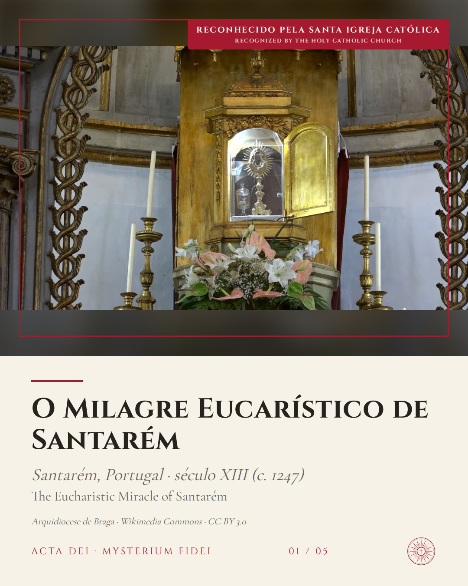
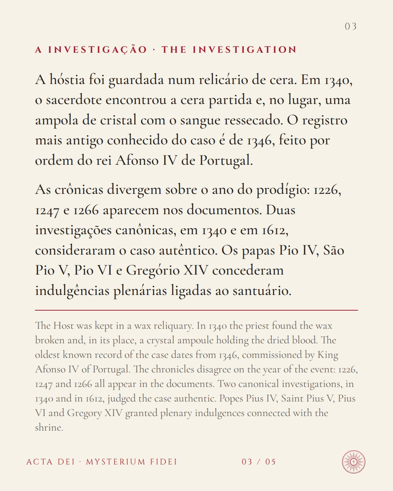
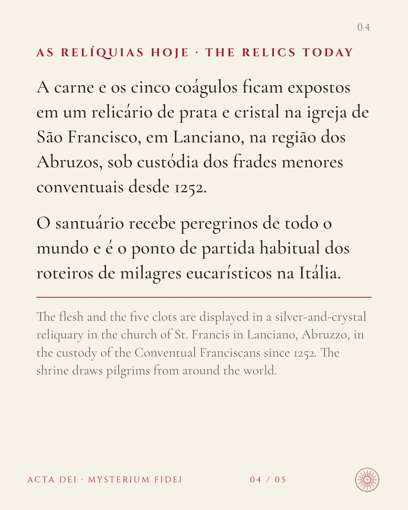
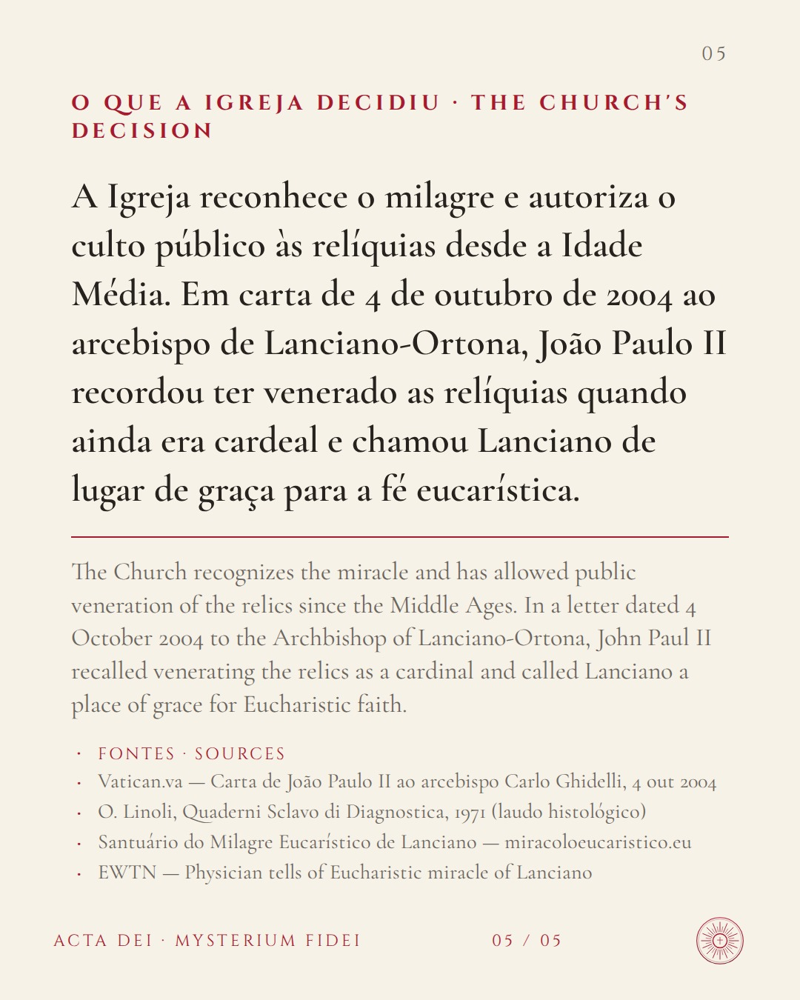

O Milagre Eucarístico de LancianoReconhecido pela Igreja





Fontes · Sources
- Vatican.va — Carta de João Paulo II ao arcebispo Carlo Ghidelli, 4 out 2004
- O. Linoli, Quaderni Sclavo di Diagnostica, 1971 (laudo histológico)
- Santuário do Milagre Eucarístico de Lanciano — miracoloeucaristico.eu
- EWTN — Physician tells of Eucharistic miracle of Lanciano